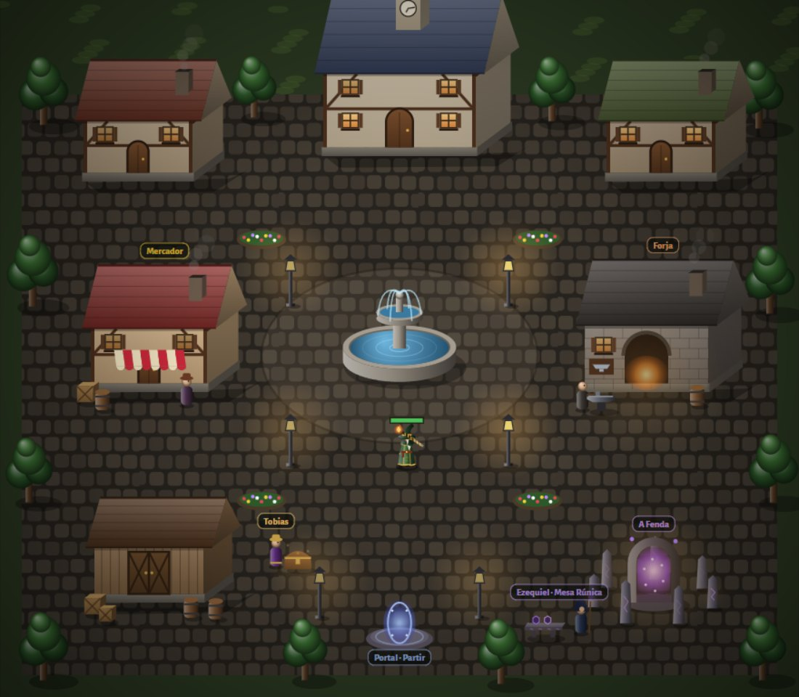
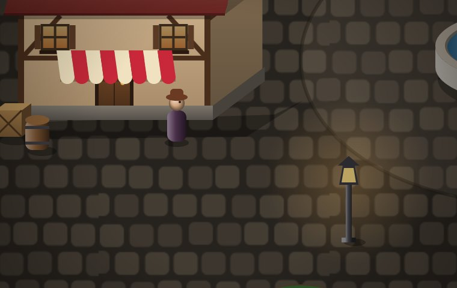
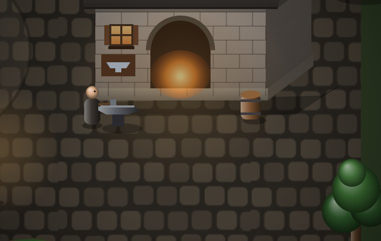
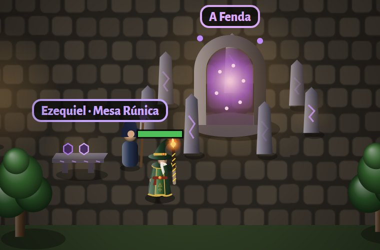

A vila
Toda caçada começa e termina na vila. Aqui o herói se cura, vende, compra, forja, compra visuais e, no nível 40, entra na Fenda.
Mapa da vila

| Lugar | Para que serve |
|---|---|
| Mercador | Compra e venda de itens, venda em lote, Baú de Visuais. |
| Forja | 3 itens iguais viram 1 melhor; 10 orbes viram 1 do próximo. |
| Tobias | O colecionador: vende o Baú de Visuais. |
| Fonte | Enfeite. A cura acontece em qualquer lugar da vila. |
| Celeiro | Era o antigo armazém. Hoje é só enfeite (o que estava guardado foi para a mochila). |
| Portal | Saída para o mapa escolhido. |
| A Fenda e a Mesa Rúnica | Entrada da Masmorra e troca de Pedras, a partir do nível 40. |
Andar e sair
- Na vila você anda com o joystick / WASD ou tocando num ponto: o herói anda até lá. Tocar num prédio anda até a porta e abre o painel.
- Chegar perto de uma porta abre o painel dela (uma vez por visita).
- Sair: botão Partir (canto de cima, à direita) ou entrar no portal. Longe do portal, o Partir abre um portal do seu lado.
- Se você não mexer em nada desde que chegou, o herói pode sair sozinho (configure em Opções).
- A vida enche ao chegar.
Mercador

- Toda chegada na vila traz 3 itens novos da sua classe, no seu nível (Comum 60%, Incomum 30%, Raro 7,5%, Épico 2%, Lendário 0,5%).
- Compra = 4× o valor de venda. Veja preços.
- Venda em lote: vende de uma vez todos os itens de uma raridade (também na mochila).
- Opção em Opções: vender os Comuns sozinho ao chegar na vila.
Forja

Duas abas: Itens (3 iguais → 1 da raridade de cima) e Orbes (10 iguais → 1 do próximo). Detalhes e custos em Orbes e Forja.
Tobias e o Baú de Visuais
O Baú de Visuais custa de ouro e sempre dá um visual que a sua conta ainda não tem. Os visuais são da conta (valem para todos os personagens) e cada personagem escolhe o seu na aba Herói. Não mudam nenhum número, só a aparência.
Mochila
- Começa com espaços de item e vai até , comprando na vila (botão na mochila).
- Orbes e Pedras não ocupam espaço: ficam nas abas Orbes e Pedras.
- Com a mochila cheia o herói não pega mais itens (itens além do limite aparecem em vermelho).
A Fenda
No canto de baixo à direita. Selada até o nível 40; depois da cena com o Ezequiel ela desperta. Tutorial completo em A Fenda e as Pedras.
